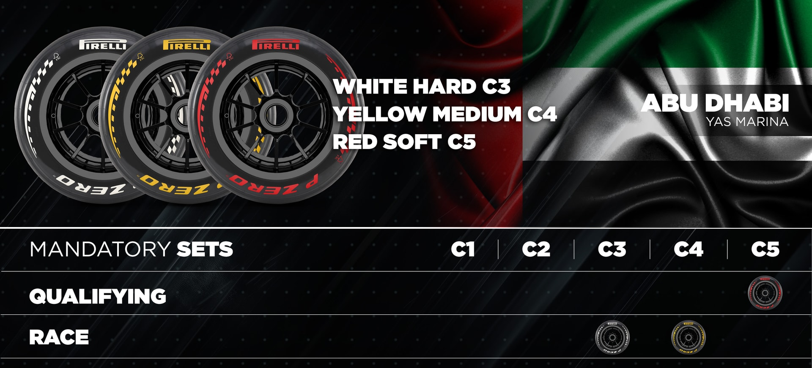

Tyres & Strategy
Compound allocation, degradation and the strategic shape of the race.
Race tyre availability
No verified pre-race set inventory has been collected for this weekend. These charts normally appear after qualifying, not with the earlier compound nomination. A missing chart is not proof of non-publication, and no zero counts or FastF1-derived inventory are substituted.
Source discovery checked 2026-11-28T13:05:40+00:00.
FIA official tyre documents
Official source; curated transcription may await review. Linked PDFs are the authority. Discovery does not extract or verify numeric values, and does not replace the curated material below.
Latest discovery attempt failed (2026-11-28T13:04:47.309650+00:00). Publication status could not be verified; any links below are from the last successful discovery.
What this circuit does to a tyre
Falling track temperature through the race means graining early and better grip later — the classic Yas Marina strategy question is when to give up track position.
Why it matters here
Improved since the reprofile but still not easy; the long straights into heavy braking zones are where it happens, helped by two DRS zones.
Where passing is hard, strategy and the undercut decide the race; where it is easy, teams can afford to run longer and recover track position on merit.
Pirelli's compound nomination graphic

Official FIA document screenshots
Some FIA screenshots could not be refreshed. Any existing images are from successful earlier downloads; use the original PDFs to check later revisions.
Automatically rendered from the official PDFs. These figures do not update or verify the curated numeric transcriptions above. Unchanged pages already illustrated above are not repeated here.